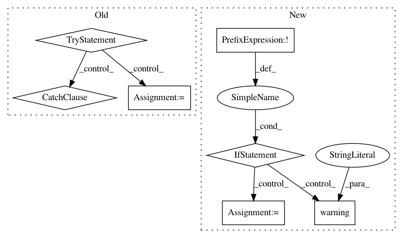

ab8c127a4a466f2c137239c0eb06c8143adea106,homeassistant/components/media_player/firetv.py,,setup_platform,#Any#Any#Any#Any#,48
Before Change
port = config.get(CONF_PORT)
device_id = config.get(CONF_DEVICE)
try:
response = requests.get(
DEVICE_LIST_URL.format(proto, host, port)).json()
if device_id in response[CONF_DEVICES].keys():
add_entities([FireTVDevice(proto, host, port, device_id, name)])
_LOGGER.info("Device %s accessible and ready for control",
device_id)
else:
_LOGGER.warning("Device %s is not registered with firetv-server",
device_id)
except requests.exceptions.RequestException:
_LOGGER.error("Could not connect to firetv-server at %s", host)
class FireTV:
The firetv-server client.
Should a native Python 3 ADB module become available, python-firetv can
After Change
ftv = FireTV(host)
adb_log = ""
if not ftv.available:
_LOGGER.warning("Could not connect to Fire TV at %s%s", host, adb_log)
return
name = config[CONF_NAME]
get_source = config[CONF_GET_SOURCE]
get_sources = config[CONF_GET_SOURCES]
device = FireTVDevice(ftv, name, get_source, get_sources)
add_entities([device])
In pattern: SUPERPATTERN
Frequency: 3
Non-data size: 7
Instances
Project Name: home-assistant/home-assistant
Commit Name: ab8c127a4a466f2c137239c0eb06c8143adea106
Time: 2018-11-18
Author: JeffLIrion@users.noreply.github.com
File Name: homeassistant/components/media_player/firetv.py
Class Name:
Method Name: setup_platform
Project Name: biolab/orange3
Commit Name: 532c5db2b1520bc7422fa106576b11e36f4721ab
Time: 2015-08-06
Author: ales.erjavec@fri.uni-lj.si
File Name: Orange/canvas/help/manager.py
Class Name:
Method Name: create_html_provider
Project Name: biolab/orange3
Commit Name: 532c5db2b1520bc7422fa106576b11e36f4721ab
Time: 2015-08-06
Author: ales.erjavec@fri.uni-lj.si
File Name: Orange/canvas/help/manager.py
Class Name:
Method Name: create_html_inventory_provider